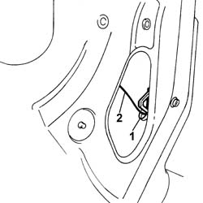
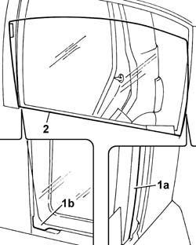

7010D14 rear side door descending window glass - r r with door panel (and mount frame) removed
- Path
- Procedures > 70 FITTINGS > 7010 PASSENGER COMPARTMENT REAR SIDE DOORS > 7010D rear side door window glasses > 7010D14 rear side door descending window glass - r r with door panel (and mount frame) removed
- Kind
- repair procedure (removal / refitting; the operation number is the code)
- Applies to
- all engines; all production periods
- Interactive page
- https://sloeber94.github.io/elrnDB-fPnd/en/#/2753102
Applies to: all engines; all production periods
 Removing
Removing
 Refitting
Refitting5570T93 REAR SIDE LOUDSPEAKER. (one), left or right - R.R. with rear door panel or wing. removed
7010A05 rear side door water guard protection-r r or arrange
7010E93 partition on rear door, lh or rh - r r with door panel removed
7010D23 rear side door descending window glass guide one-r r
7010D18 rear side door descending window glass channel r r
7010D26 rear side descending window glass scraper (outer) r r
1. Lower/raise the descending window until the safety retainer can be released.
2. Release the descending window from the drive pin.

Applies to: all engines; all production periods
1. Tilt the descending window in order to be able to fit it in the housings (1a) and (1b) in the door frame.
2. Remove the descending window glass.

Applies to: all engines; all production periods
Refitting
RemovingCheck the condition of the window, the fastening element, the drive pin and the safety retainer.
Place the descending window in position, inserting it in the housings in the door frame.
Slide the window until the opening for the drive pin is accessible.
Connect the drive pin and attach the safety retainer.
Check that the window is working properly.
7010D26 rear side descending window glass scraper (outer) r r
7010D18 rear side door descending window glass channel r r
7010D23 rear side door descending window glass guide one-r r
7010E93 partition on rear door, lh or rh - r r with door panel removed
7010A05 rear side door water guard protection-r r or arrange
5570T93 REAR SIDE LOUDSPEAKER. (one), left or right - R.R. with rear door panel or wing. removed
Topics linked from this page (6)
- 5570T93 REAR SIDE LOUDSPEAKER. (one), left or right - R.R. with rear door panel or wing. removed
- 7010A05 rear side door water guard protection-r r or arrange
- 7010D18 rear side door descending window glass channel r r
- 7010D23 rear side door descending window glass guide one-r r
- 7010D26 rear side descending window glass scraper (outer) r r
- 7010E93 partition on rear door, lh or rh - r r with door panel removed